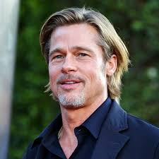

Gold Digger Team Introductions
Gold Digger Team Introductions
Nick was born and raised in Draper, Utah. He is currently working on a masters degree in civil engineering.
Once he has completed his degree he plans on working for a consulting company in the sismic hazard analysis field.
Nathan Gunnell was born and raised in Utah. He is currently working on a masters degree in geology.
After graduation Nathan hopes to work in the enviromental field. Nathan was voted most likely to succeed by his parents
and his class mates. Nathan is happily married to his wife.
Joseph was born and raised in England. Joseph is also working on a masters degree in geology. Joseph was voted
as having the most soothing voice in his undergraduate cohort. Joseph has been happily married for three.

Copyright Gold Diggers inc.